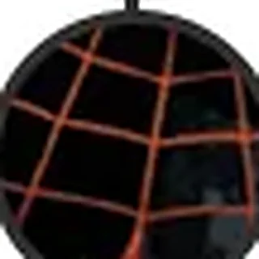

Encyclopédie › Cosmos et firmaments

Huitième Cosmos
Malkuth · 2015 – aujourd’hui
À vérifier1ʳᵉ apparition · Ka-Zar (Manvis) #112 relations
Présentation
Les Axes de Tout (forme cubique), la Rive Lointaine / Ginnungagap (bord de tout), l’Exo-Espace (zone neutre), le Superflow (entre les univers) et les univers individuels comme Terre-616.
Notre cosmos actuel : le seul à porter en lui les restes du précédent.
Où le lire
- Defenders (2021) #1 « Eighth Cosmos: The Magician »
Relations

8ᵉ Firmament : Marvels
Cosmos et firmaments
9ᵉ Firmament : Ruines
Cosmos et firmaments

Battleworld
Cosmos et firmaments · après les Secret Wars

Exo-Espace
Lieux et dimensions · espace eldritch · zone neutre

Franklin Richards
Personnages · le créateur de mondes

La Rive Lointaine
Lieux et dimensions · bord du Dehors

Les Defenders (2021)
Groupes · les voyageurs des cosmos
Malkuth : Huitième Cosmos
Lieux et dimensions · Multivers Marvel · 2015 – présent
Multivers
Lieux et dimensions · le Vortex Cosmique

Reed Richards
Personnages · le rebâtisseur

Superflow
Lieux et dimensions · espace onirique entre les réalités

Univers · Terre
Lieux et dimensions · le cœur de la carte